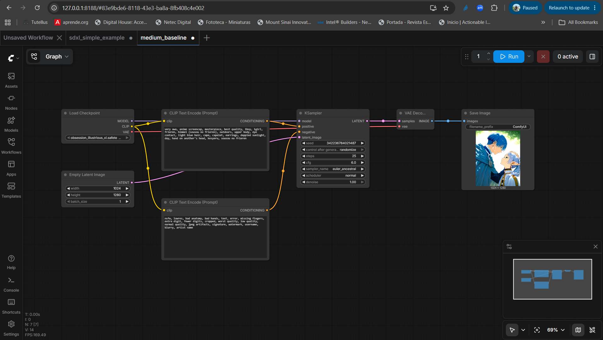
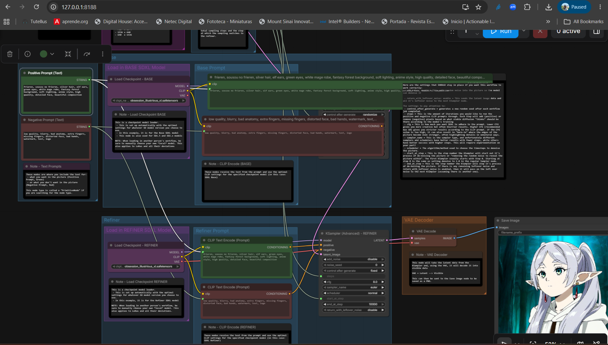
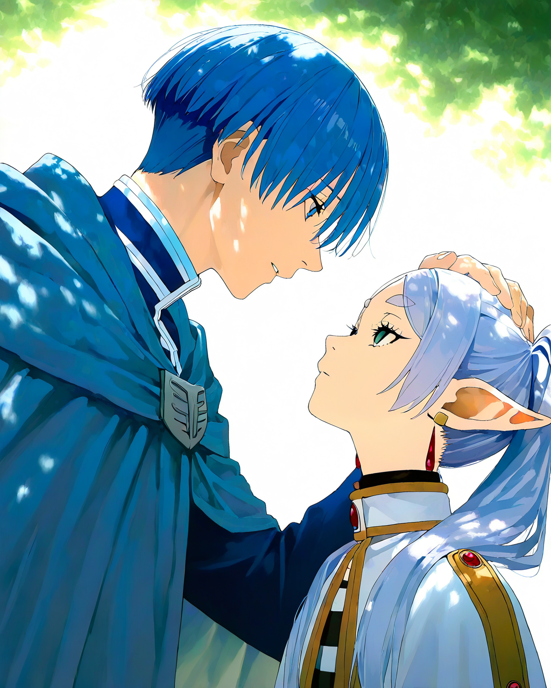
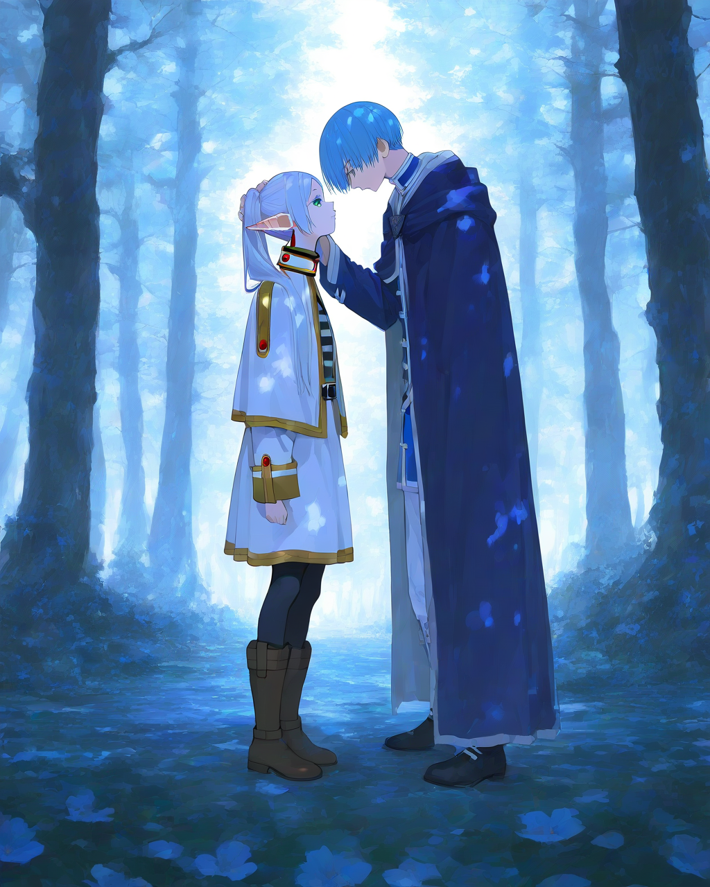
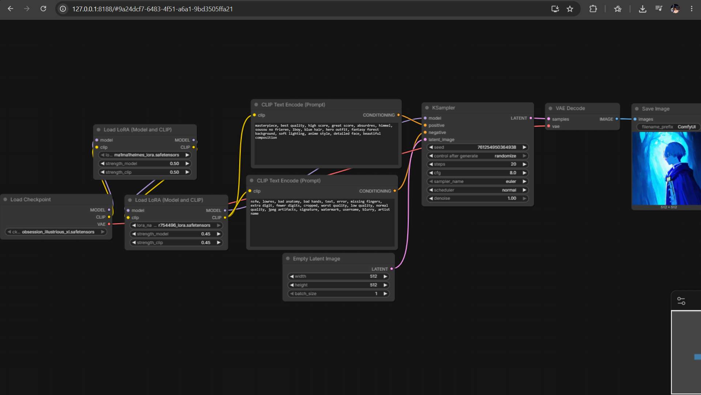

Before working on this assignment, the main image generation interface I knew was StableDiffusion-WebUI. This homework helped me understand ComfyUI much better because its node-based workflow makes the full generation process visible. I could clearly see how the checkpoint, CLIP text encode nodes, LoRA loaders, KSampler, VAE Decode, and preview/save image nodes connect together.
For the simple baseline, I successfully installed and ran ComfyUI. For the medium baseline, I generated a Frieren image using a checkpoint together with a LoRA model. For the strong baseline, I extended the workflow by using the checkpoint with two LoRA models and generated a Himmel image. This made the difference between the model checkpoint and LoRA style control clearer to me.
The hardest part was understanding where the LoRA Loader should connect and how its model and CLIP outputs affect the rest of the workflow. I also learned that prompt quality is very important. Even when the model and LoRA are loaded correctly, details such as the eyes, hair, face shape, and character expression can still look unnatural if the prompt or generation parameters are not precise enough. Overall, this assignment helped me understand how ComfyUI can be used to control AI image generation in a more modular and flexible way.
| 總分 | 完成後打勾 | 配分 | 分項描述 |
|---|---|---|---|
| 4 | Simple baseline - 完成 ComfyUI 建置 | ||
| 4 | Medium baseline - 使用 Checkpoint + LoRA 完成芙莉蓮文生圖 | ||
| 2 | Strong baseline - 使用 Checkpoint + 雙 LoRA 完成辛梅爾文生圖 | ||
| -10 | 沒有寫 100 字心得 |


Resolution: 1024 * 1024
`nLoRA Strength: 0.5
Positive: masterpiece, best quality, high score, great score, absurdres, frieren, sousou no frieren, 1girl, solo, silver hair, white hair, elf ears, pointy ears, green eyes, white robe, fantasy forest, detailed face, beautiful lighting, soft background
Negative: nsfw, lowres, bad anatomy, bad hands, text, error, missing fingers, extra digit, fewer digits, cropped, worst quality, low quality, normal quality, jpeg artifacts, signature, watermark, username, blurry, artist name

Resolution: 512 * 512
LoRA 1 Strength: 0.5
LoRA 2 Strength: 0.45
Positive: masterpiece, best quality, high score, great score, absurdres, himmel, sousou no frieren, 1boy, solo, blue hair, blue eyes, blue cloak, hero, fantasy forest, detailed face, soft lighting, cinematic composition, upper body, beautiful background
Negative: nsfw, lowres, bad anatomy, bad hands, text, error, missing fingers, extra digit, fewer digits, cropped, worst quality, low quality, normal quality, jpeg artifacts, signature, watermark, username, blurry, artist name

Strong baseline workflow screenshot：Checkpoint + 雙 LoRA
